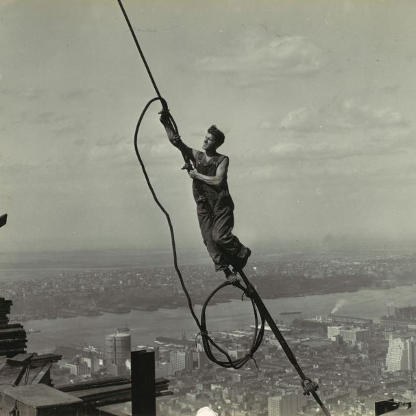

Opened in 1931 on Manhattan’s Fifth Avenue, the Empire State Building is located in the heart of NYC. A testament to the power of American industry, the Empire State was the first building in the world to have more than 100 floors, and its steel frame was considered a modern marvel.
The building’s Art Deco design has inspired visitors from around the world. At nightfall, the 200-foot crowning spire captures the city’s gaze, illuminated by tower lights that dazzle with ever-changing combinations of color. It’s no wonder the Empire State Building is the most photographed building in the world.
Millions of visitors every year travel through our Fifth Avenue lobby at the end of their Observatory visit. The revitalized atrium showcases the magic of art deco style. Shimmering starbursts and metallic touches gild the halls, elevators, and ceiling. It’s a true piece of New York history, and designated a landmark by the Landmark Preservation Commission.
| Design and construction | |
|---|---|
| Architect(s) | Shreve, Lamb and Harmon |
| Developer | Empire State Inc. |
| including John J. Raskob and Al Smith | |
| Structural engineer | Homer Gage Balcom |
| Main contractor | Starrett Brothers and Eken |
rom the start of construction to modern day fame, the story of the Empire State Building is one you’ll never forget.

Intended to be the world's first 100+ story building, construction of the Empire State Building began on March 17, 1930. Construction was completed in a record-breaking 1 year and 45 days.
In 1932 as the world’s tallest building, the Empire State Building quickly becomes an acclaimed tourist attraction. People from across the world flock to the building, paying 10 cents to peer through a telescope at New York City. In 6 months, the building collects more than $3,000 in nickels and dimes.